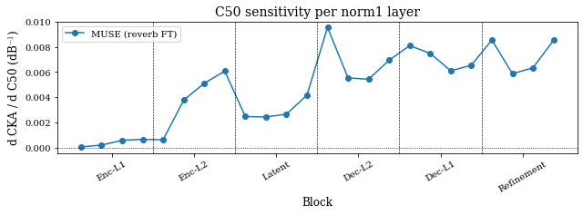

06 — Reverb probing (C50 sensitivity)#
What this shows. Per-layer regression slope of CKA vs C50 (reverb late-energy ratio) for the reverb fine-tuned MUSE — the same robustness/adaptivity question as notebook 02, but for room reverberation instead of additive noise.
What to look for. Encoder layers stay flat (low slope, robust to C50). The latent and decoder bands track the C50 axis (positive slope), and the magnitude-refinement block partly recovers — analogous to the noise picture but with a different shape because reverb perturbs the signal multiplicatively.
Two-tier design. The figure cells below always run from a precomputed parquet so the published shape is correct on any laptop. A bottom cell loads the model for live inference and is gated by SE_PROBE_RUN_INFERENCE=1; the shipped checkpoint is a placeholder (= upstream noise-only g_best) so its inference output will not match the paper. Replace with the cluster checkpoint to reproduce paper numbers.
Runtime. Figure cells: <30 s. Inference (only when env var is set): ~1 min CUDA / ~5 min MPS / ~15 min CPU.
import sys
from pathlib import Path
REPO = Path.cwd().resolve()
while REPO.name != "SE-Probe" and REPO.parent != REPO:
REPO = REPO.parent
if str(REPO) not in sys.path:
sys.path.insert(0, str(REPO))
from se_probe.device import device_info, get_device
from se_probe.plotting import MODEL_COLORS, MODEL_LABELS, apply_paper_rcparams
apply_paper_rcparams()
DEVICE = get_device()
print(device_info(DEVICE))
import pandas as pd
DATA_DIR = REPO / ("results_df" if (REPO / "results_df").exists() else "results_demo")
print(f"Using data from: {DATA_DIR}")
Detected device: cpu
Using data from: /home/runner/work/SE-Probe/SE-Probe/results_demo
Load reverb CKA table#
C50 is the early-to-late energy ratio of the room impulse response (in dB); higher = drier. We restrict to the [-5, 25] C50 window where the linear fit makes sense and average across utterances.
reverb_path = DATA_DIR / ("reverb/cka_reverb_muse_epoch_48.parquet" if (DATA_DIR / "reverb").exists() else "cka_reverb_muse_demo.parquet")
df = pd.read_parquet(reverb_path)
df = df[df["layer"].str.endswith(".norm1")].copy()
df = df[(df["c50"] >= -5) & (df["c50"] <= 25)]
block_order = ["encoder_level1", "encoder_level2", "latent", "decoder_level2", "decoder_level1", "mag_refinement"]
norm1_layers = sorted(df["layer"].unique(),
key=lambda L: (next((i for i, b in enumerate(block_order) if b in L), len(block_order)), L))
print(f"norm1 layers: {len(norm1_layers)} | rows after C50 filter: {len(df):,}")
norm1 layers: 24 | rows after C50 filter: 960
Per-layer slope of CKA vs C50#
import numpy as np
from sklearn.linear_model import LinearRegression
rows = []
for layer in norm1_layers:
g = df[df["layer"] == layer]
cell = g.groupby("c50", as_index=False)["CKA"].mean().sort_values("c50")
x, y = cell["c50"].to_numpy(dtype=float), cell["CKA"].to_numpy(dtype=float)
if len(np.unique(x)) < 2:
continue
reg = LinearRegression().fit(x.reshape(-1, 1), y)
rows.append({"layer": layer, "slope": reg.coef_[0], "intercept": reg.intercept_,
"r2": reg.score(x.reshape(-1, 1), y)})
trend = pd.DataFrame(rows)
print(f"layers fit: {len(trend)} | mean R²: {trend['r2'].mean():.3f}")
trend.head()
layers fit: 24 | mean R²: 0.895
| layer | slope | intercept | r2 | |
|---|---|---|---|---|
| 0 | TCFTransformer.encoder_level1.mhca_blks.0.tran... | 0.000050 | 0.998971 | 0.856385 |
| 1 | TCFTransformer.encoder_level1.mhca_blks.0.tran... | 0.000193 | 0.995910 | 0.875220 |
| 2 | TCFTransformer.encoder_level1.mhca_blks.0.tran... | 0.000572 | 0.987685 | 0.884399 |
| 3 | TCFTransformer.encoder_level1.mhca_blks.0.tran... | 0.000649 | 0.986016 | 0.895472 |
| 4 | TCFTransformer.encoder_level2.mhca_blks.0.tran... | 0.000619 | 0.986498 | 0.881581 |
import matplotlib.pyplot as plt
block_size = max(1, len(trend) // 6)
tick_labels = ["Enc-L1", "Enc-L2", "Latent", "Dec-L2", "Dec-L1", "Refinement"]
tick_positions = [i * block_size + block_size / 2 - 0.5 for i in range(6)]
x = np.arange(len(trend))
fig, ax = plt.subplots(figsize=(9, 3.4))
ax.plot(x, trend["slope"].values, marker="o", color=MODEL_COLORS["muse"],
label=f"{MODEL_LABELS['muse']} (reverb FT)")
ax.axhline(0, color="k", linestyle=":", linewidth=0.8)
ax.set_xlabel("Block")
ax.set_ylabel(r"d CKA / d C50 (dB$^{-1}$)")
ax.set_title("C50 sensitivity per norm1 layer")
ax.set_xticks(tick_positions)
ax.set_xticklabels(tick_labels, rotation=30, ha="center")
for i in range(block_size, len(trend), block_size):
ax.axvline(x=i - 0.5, color="k", linestyle="--", linewidth=0.6)
ax.legend(loc="best")
plt.tight_layout();

Optional: live inference with the reverb fine-tuned MUSE#
⚠️ Placeholder checkpoint warning. The file shipped at
pretrained_models/muse/muse_reverb_e48.ptis a copy of the upstream noise-onlyg_bestweights — it is not the paper’s reverb fine-tuned model. Loading it works (the architecture matches), but inference numbers will not reproduce the paper. The real epoch-48 checkpoint lives on the iscohen_prj cluster; once retrieved and uploaded to the SE-Probe HuggingFace model repo,python scripts/setup.pywill fetch it and this cell will produce paper-grade numbers automatically.
Set SE_PROBE_RUN_INFERENCE=1 to enable the cell below.
import os
if os.environ.get("SE_PROBE_RUN_INFERENCE") == "1":
import numpy as np
from se_probe.activation_extraction import load_muse_activation_extractor_reverb
from se_probe.cka import cka
canonical = REPO / "pretrained_models/muse/muse_reverb_e48.pt"
staging = REPO / "_workspace/release_artifacts/muse_reverb_e48.pt"
ckpt = canonical if canonical.exists() else staging
if not ckpt.exists():
raise FileNotFoundError(
"Reverb checkpoint not found. Run `python scripts/setup.py` to fetch the placeholder."
)
print(f"Loading reverb FT MUSE from: {ckpt}")
extractor = load_muse_activation_extractor_reverb(device=DEVICE, checkpoint_path=str(ckpt))
rng = np.random.default_rng(0)
sr = 16000
clean = (rng.standard_normal(sr * 2) * 0.05).astype("float32")
rir = (rng.standard_normal(int(sr * 0.5)) * 0.05).astype("float32")
rir[0] = 1.0
rev = np.convolve(clean, rir, mode="same").astype("float32")
act_clean, _ = extractor(clean)
act_rev, _ = extractor(rev)
layer = next(iter(act_clean))
val = cka(act_clean[layer], act_rev[layer])
print(f"Live CKA on synthetic reverb clip ({layer}): {float(val):.4f}")
print("Note: numbers are placeholder-grade until the cluster checkpoint replaces this file.")
else:
print("SE_PROBE_RUN_INFERENCE not set — skipping live inference. Set it to '1' to enable.")
SE_PROBE_RUN_INFERENCE not set — skipping live inference. Set it to '1' to enable.